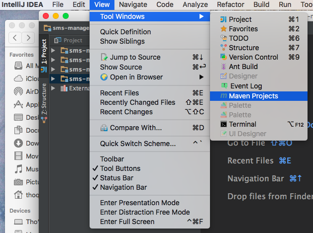
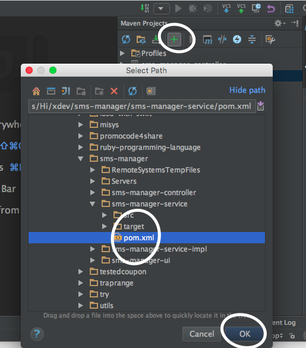

How to open and edit multiple projects in the same window?
I build in maven multiple projects (let's name them A,B,C). Project A uses .jar of project B which uses .jar of project C.
I am modifying the code of all A/B/C projects, (A is MVC app, B are business services and C is some shared layer).
The thing is, in Eclipse/NetBeans I can see all of them at once and it's comfortable to modify them. In IDEA though, I have to open 3 instances (or n instances) of IntelliJ IDEA.
Am I missing something? Is there better approach when using IntelliJ? This is the biggest downside of IntelliJ for me atm.
Answer
Yes, your intuition was good. You shouldn't use three instances of intellij. You can open one Project and add other 'parts' of application as Modules. Add them via project browser, default hotkey is alt+1
Suggest
Step 1 : open "Maven Projects"

Step 2 : select the project you want to import:
